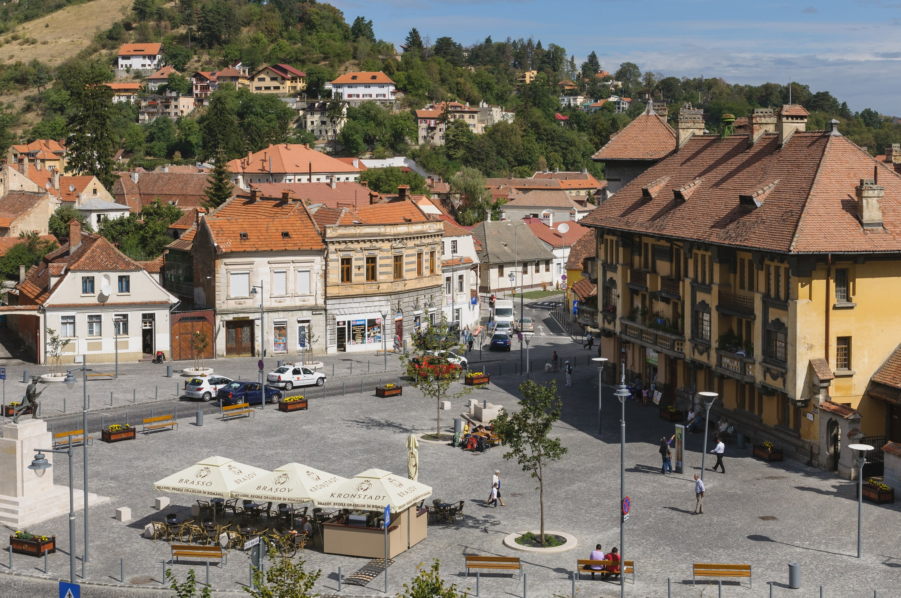

Stroll through charming streets, admire historical sights, and feel the city’s vibrant spirit—no rush, just
footsteps, stories, and the joy of exploration!
Livada Postei
Start your journey here and step into the vibrant heart of Brașov’s marathon spirit.
Challenge: What year did Transilvania University open?
Piata Sfatului
Brașov’s lively main square, full of color, history, and perfect mountain views all around.
Challenge: Discover old name of Brasov and its symbol that is illustrated on the museum at the center of the
square!
Biserica Neagră
A Gothic masterpiece rising tall—step close and feel the weight of Brașov’s grand past.
Challenge: Search and read the story about the reason why the church is called Black (Neagra)?
Poarta Ecaterinei
A fairytale gate with towers and charm, guarding tales from Brașov’s medieval days.
Challenge: Why are the Gates called Ecaterina’s?
Bastionul Țesătorilor
Once a mighty fortress, now a quiet witness to the city’s defense and craft legacy.
Challenge: What is the width of the walls of this bastion?
Prima Scoala Romaneasca
A symbol of learning and language, where the story of Romanian education began.
Challenge: What is the name of the Church nearby?
Piața Unirii
A peaceful square where urban life meets tradition—your last urban stop before nature.
Challenge: What is the initial name of this square?
Hint: Go to Pietre lui Solomon with 50th bus.

Pietre lui Solomon
Legends and nature meet here—Brașov’s hidden gem of forest, cliffs, and peaceful escapes.
Challenge: Find a legend about the King Solomon!
Congratulations!
You’ve reached the finish line! Take a breath, enjoy the view—Brașov’s story walks with you.
Brasov old name is Kronstadt and the symbol of the city is the Crown with the Roots of tree
After the fire in the Church in 1689, the walls of the Church became black and the Church
received its name
The Gates are named Caterine's after St. Caterine's Monastery that was there before.
The width of the walls is 4 meters!
It is called St. Nicolae Church
The initial name is "Piata Prundului" that refers the flow that came here from Solomon Stones!
King Solomon was riding on a horse, and the soldiers who wanted to catch him were rushing after him. With no other
choice, King Solomon tried to jump from one rock to another. This allowed him to escape.